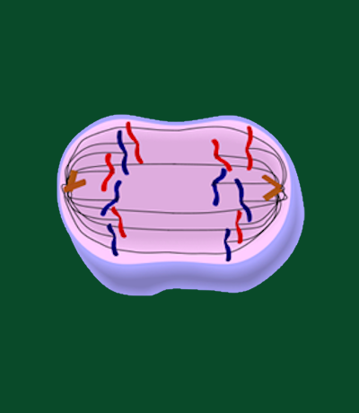

Anaphase, a crucial stage in the process of cell division known as mitosis, marks the moment when
duplicated genetic material is accurately and efficiently segregated to opposite poles of the dividing
cell. Following metaphase, where chromosomes align along the cell's equatorial plane, anaphase
represents the dynamic and orchestrated movement of sister chromatids towards opposite ends of the
dividing cell. The meticulous execution of this separation ensures that each daughter cell receives an
identical and complete set of chromosomes. This pivotal step is essential for maintaining genetic
stability and fidelity in the generation of new cells.
During anaphase, the linkage between sister chromatids is severed as protein structures called the
centromeres divide. This separation is facilitated by the shortening of microtubules, components of the
mitotic spindle, attached to the centromeres. As these microtubules retract, sister chromatids are
pulled apart and guided towards the respective poles by the dynamic forces of the spindle apparatus. The
cell undergoes significant elongation during anaphase, further contributing to the physical separation
of genetic material.
The fidelity of chromosome segregation during anaphase is monitored by the mitotic checkpoint, a
regulatory mechanism ensuring that all cellular components are in their proper positions before
progression to subsequent stages. Successful anaphase completion sets the stage for the final steps of
mitosis, leading to the formation of two genetically identical daughter cells, each with a complete and
accurately distributed set of chromosomes. In summary, anaphase stands as a remarkable testament to the
precision and complexity of cellular processes governing the faithful inheritance of genetic material.
